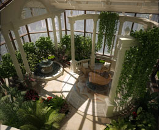
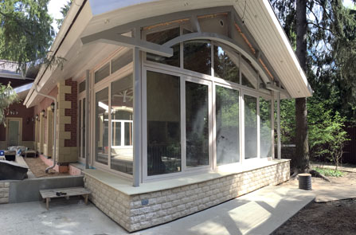

Первые упоминания о системах зимних садов относят ко временам Римской Империи, когда капризные патриции, обладающие высоким художественным вкусом, могли наслаждаться цветением экзотических тропических растений не выходя из дома. За неимением систем отопления обогрев воздуха в комнатных оранжереях достигался за счет тепла, выделяемого перегноем в процессе жизнедеятельности. Первые стеклянные системы зимних садов со специальным отоплением появились в имениях английских лордов в конце семнадцатого века.
На сегодняшний день зимний сад является широко распространенным элементом интерьеров как большинства культурно-оздоровительных и офисных центров, так и многих частных загородных домов. Современные технические достижения позволяют любому желающему при помощи специальных материалов разработать и смонтировать в своем жилище домашнюю оранжерею и круглогодично наслаждаться благоухающими зелеными насаждениями. Проектирование зимнего сада не только придаст вашему загородному дому или квартире неповторимый облик, но и позволит значительно расширить жизненное пространство, ведь сегодня зимний сад может стать не только местом для разведения экзотических растений, но и неожиданно уютной гостиной, тихим рабочим кабинетом или просто комфортным помещением, где вы сможете отдохнуть душой.
Специалисты компании «Окна Формат» помогут воплотить в реальность ваши самые смелые мечты. На основании идей и представлений клиента о том, как должен выглядеть зимний сад, наши сотрудники создадут 3D проект, который позволит заказчику получить зримое воплощение концепции будущего сооружения. Перед окончательным утверждением можно будет внести в проект необходимые коррективы.
Подобрав наиболее подходящие материалы и цветовое решение в соответствии с вашим вкусом, техническими запросами и материальными возможностями, наши специалисты в кратчайшие сроки изготовят элементы конструкции, которые будут без задержек доставлены на место и собраны в единое целое опытной бригадой монтажников.
Так как все элементы и детали будущей конструкции изготавливаются нами из высококачественного импортного профиля на собственных производственных линиях, мы можем гарантировать как высочайшее качество и жесткий контроль всех производственных процессов, так и умеренные цены, ведь в стоимость готовой конструкции не входят никакие дополнительные наценки и посреднические услуги.
Наши специалисты-монтажники проходят ежегодную стажировку в компании-производителе профиля, а также несколько раз в год аттестуются собственной службой контроля качества «Окна Формат» что позволяет нам обеспечить высокий уровень проведения всех этапов монтажных работ, от возведения фундамента, если таковой предусмотрен договором, до остекления готовой конструкции импортными стеклопакетами высокого качества.
Неукоснительное соблюдение всех необходимых технологических этапов при производстве и монтаже вашего зимнего сада, а также строительных норм и правил позволяет компании «Окна Формат» гарантировать бесперебойную эксплуатацию сооружения в течение всего срока службы.